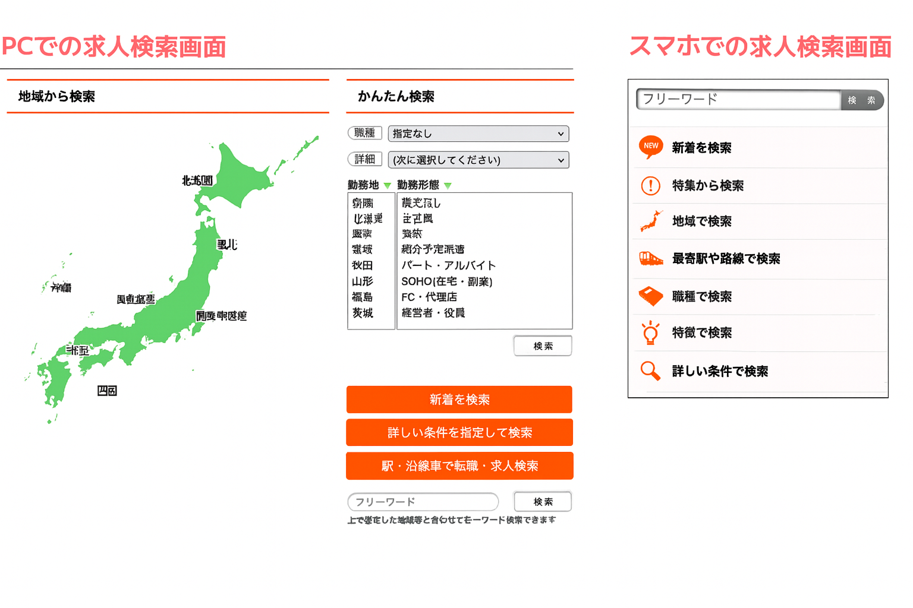

YOU CAN USE YOUR RESUME AND WORK HISTORY DIRECTLY IN YOUR JOB APPLICATION.
作った履歴書・職務経歴書は、そのまま応募に。スムーズな
転職活動を。
YOU CAN USE YOUR RESUME AND WORK HISTORY DIRECTLY IN YOUR JOB APPLICATION. 作った履歴書・職務経歴書は、そのまま応募に。スムーズな転職活動を。
STEP 1
まずは30秒で会員登録
まずは30秒で
会員登録
基本的な情報を入力するだけですぐに利用開始。もちろん費用は一切
かかりません。

STEP 2
質問に答えるだけで履歴書・職務経歴書簡単1分で作成
質問に答えるだけで履歴書・職務経歴書簡単1分で作成
いくつかの簡単な質問に答えるだけで、あなたの強みが伝わるプロ品質の履歴書・職務経歴書が自動で完成し、コンビニでプリントも出来ます。

STEP 3
厳選された求人の中から簡単検索
厳選された求人の
中から簡単検索
完成したプロフィールをもとに、エージェントがあなたにぴったりの仕事を提案。サイトには載らない非公開求人も多数ご紹介可能です。
STEP 4
気になる求人を転職エージェントヘ
エントリー
気になる求人を転職エージェントヘ
エントリー
作成した書類を使って、気になる求人票を転職エージェントへ応募。 応等後は、転職エージェントが映開室・雪類用・後対策・ 日程整・条件交渉までを 一貫してサポート。内定・入社まで伴走します。
WHY SHIGOTONAVI? しごとナビが選ばれる理由
WHY SHIGOTONAVI?
しごとナビが選ばれる
理由
簡単1分で
履歴書・職務経歴書
テンプレートを選ぶだけで、プロ品質の書類が完成。そのまま応募までシームレスに行えます。
サービス満足度99%
この数字は、私たちが一人ひとりのキャリアに真剣に向き合った結果です。確かな実績と信頼のサポート、あなたの転職を支えます。
履歴書作成から内定まで
フルサポート
転職のプロが書類の添削から面接対策、企業との交渉まで、あなたの転職を徹底サポートします。
20年以上の実績
長年の実績で培った優良企業との太いパイプで、他にはない非公開求人も多数ご紹介可能です。

「しごとナビ」は、プライバシーマークを取得し、安心してご利用いただける
環境を整えております。
お預かりした個人情報は、関連する法令やガイドラインに基づき、厳格に管理・運用しております。
お客様の大切な情報を安全にお取り扱いいたします。
「しごとナビ」は、プライバシーマークを取得し、
安心してご利用いただける
環境を整えております。
お預かりした個人情報は、関連する法令やガイドラインに基づき、厳格に管理・運用しております。お客様の大切な情報を安全にお取り扱いいたします。